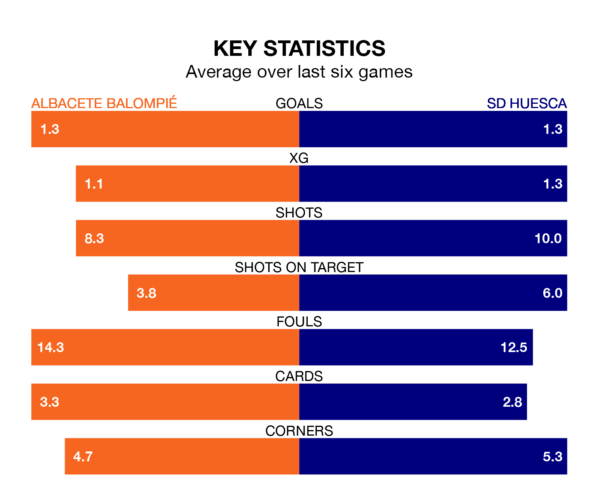

SD Huesca face Albacete Balompié on Saturday seeking to protect their formidable unbeaten run in the Segunda División.
Huesca are unbeaten in nine, with four wins and five draws, ahead of the 5.30pm kick-off.
They face an Albacete team who have won one and drawn four over the same number of games.
In Álvaro Fernández, Huesca can rely on one of the league's safest pair of hands. He has kept 16 clean sheets in his 32 appearances this season, and no 'keeper has prevented the opposition scoring more often in the Segunda División.
In Albacete's net, Bernabé Barragán Maestre has six clean sheets in 24 games. He has conceded a goal every 72 minutes, twice as often as the 144 minutes between goals for Fernández Llorente.
In the last 10 years, Albacete and Huesca have played each other on nine occasions. Albacete won two of them, Huesca one, and they drew six times.
On average, Albacete scored 0.9 goals and Huesca 0.9 in those matches.
Their last meeting was on October 29, when they played out a 0-0 draw.
The hosts are 19th in the table after 32 games, of which they have won seven and drawn 11, earning 32 points.
The away side are five places ahead of Albacete in 14th, with nine wins and 13 draws putting them on 40 points.
With 28 goals in 32 games so far this season, Huesca are scoring at below the league average rate with 0.9 goals per game. But they are conceding fewer than average too, letting in 22 goals at a rate of 0.7 per game.
Albacete, meanwhile, are above average scorers, with 1.2 goals per game, compared to a league average of 1.1. They have conceded 1.5 goals per game.
Albacete's last match was on Monday, a 1-1 draw against Racing Club de Ferrol, with Alberto Quiles Piosa getting the goal for Albacete.
Huesca beat Burgos CF 3-0 last time out, on Sunday, with Eladio Zorrilla Jiménez, Iker Kortajarena Canellada and Jorge Pulido Mayoral on the scoresheet.
Updated: 12:39 (UTC), 26/03/24